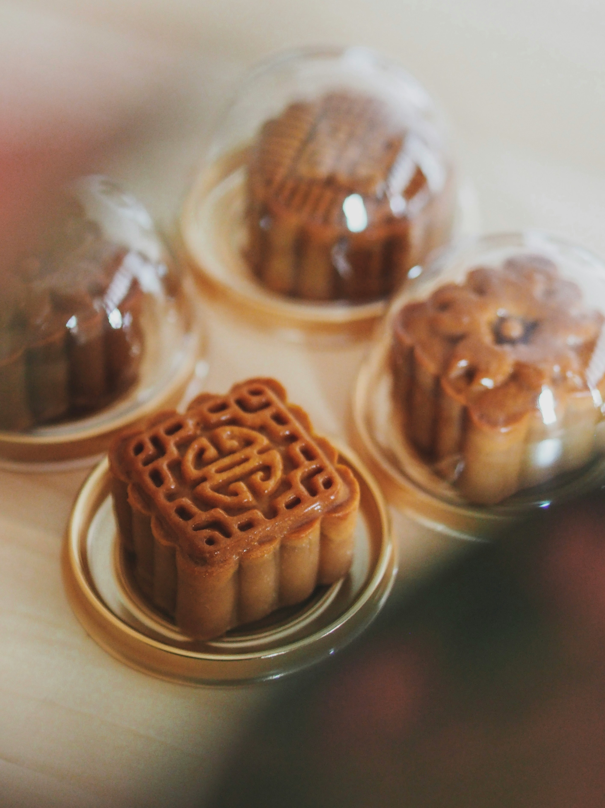
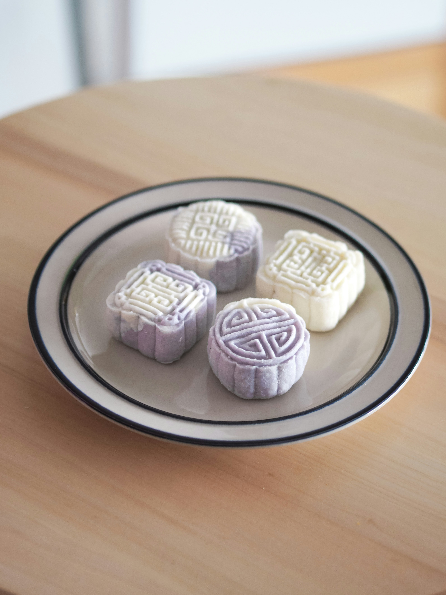

Home
Welcome to my Mid Autumn Festival Page
This web page is dedicated to explain the traditions of the festival
A Celebration of Reunions and Gratitude
Welcome to my Mid Autumn Festival Page
This web page is dedicated to explain the traditions of the festival
The Mid-Autumn Festival, also known as the Moon Festival or the Mooncake Festival, is a traditional festival celebrated primarily in East Asian countries, especially China, Vietnam, Taiwan, and Singapore. Its origins date back over 3,000 years to ancient China during the Shang dynasty, when people worshipped the moon for bountiful harvests. The festival is celebrated on the 15th day of the 8th lunar month, when the moon is believed to be at its fullest and brightest. The Mid-Autumn Festival is associated with the legend of Chang'e, the Moon Goddess, who is said to have taken an elixir of immortality and ascended to the moon, leaving her husband, Hou Yi, behind on Earth.
Over time, the festival has evolved from a harvest celebration to one that emphasizes family reunions, symbolized by the roundness of the full moon. Traditional customs include eating mooncakes, a pastry filled with sweet or savory fillings, and gazing at the moon. Lanterns are also lit and displayed, particularly by children. Today, the Mid-Autumn Festival remains a time for families to come together, celebrate the harvest, and enjoy cultural performances, making it one of the most important traditional festivals in Chinese culture.

In recent years the creation of mooncakes has evolved from the standard traditional to the modernized snowskin.
Now mooncakes consisting of a variety of ingredients are enjoyed by people of all ages.
Traditional Mooncake |
Snowskin Mooncake |
Here is a list of activities done during the festival:
Lanterns, often in the shape of animals, plants, or traditional symbols, are designed, lit, and displayed, especially by children. In some places, lantern processions or parades are held, creating a festive and colorful atmosphere.
Since the festival coincides with the full moon, many people gather outdoors to admire the moon, which is believed to be at its brightest and fullest. It's a time for reflection and appreciation of nature's beauty.
In some communities, dragon and lion dances are performed to add to the festive spirit. These dances are believed to bring good luck and are a common feature in many traditional Chinese celebrations.
In some areas, cultural performances such as traditional Chinese opera, music, and dance are organized as part of the festival celebrations.
In some regions, people still perform rituals to worship the Moon Goddess, Chang'e. Offerings of fruits, mooncakes, and other foods are made on altars set up outside under the moon.